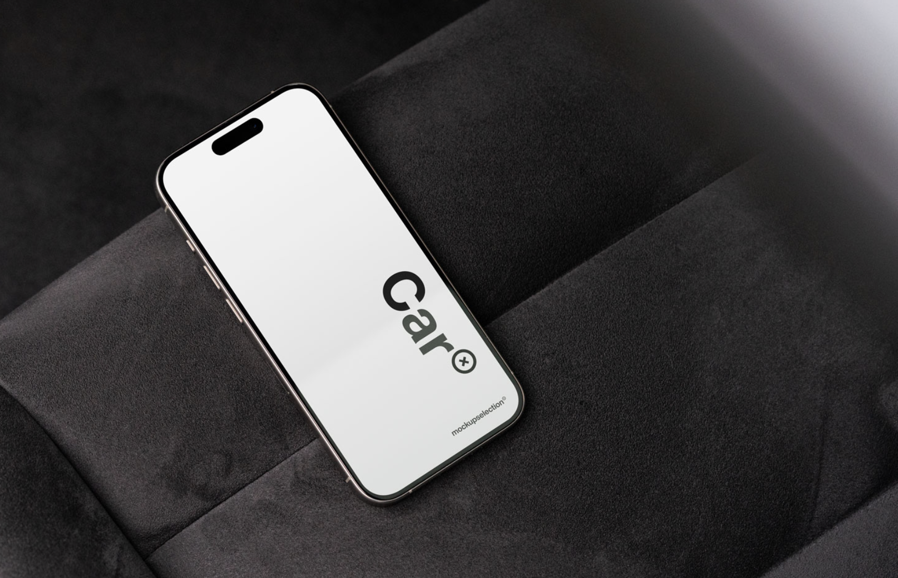
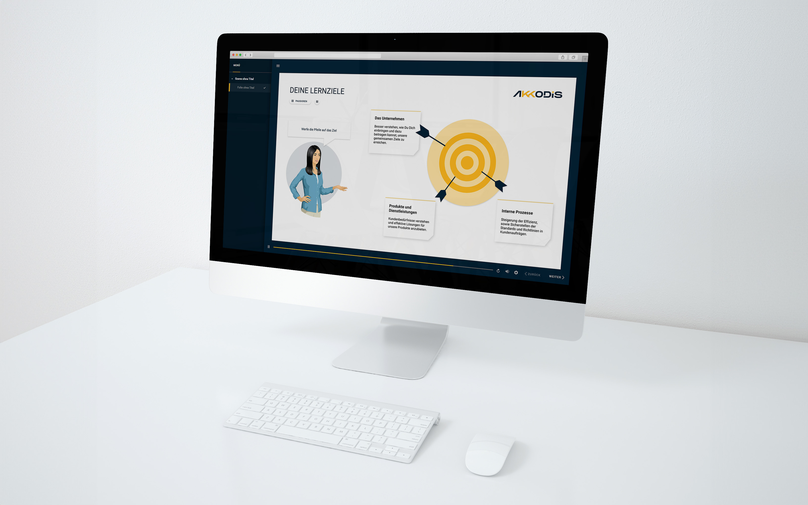
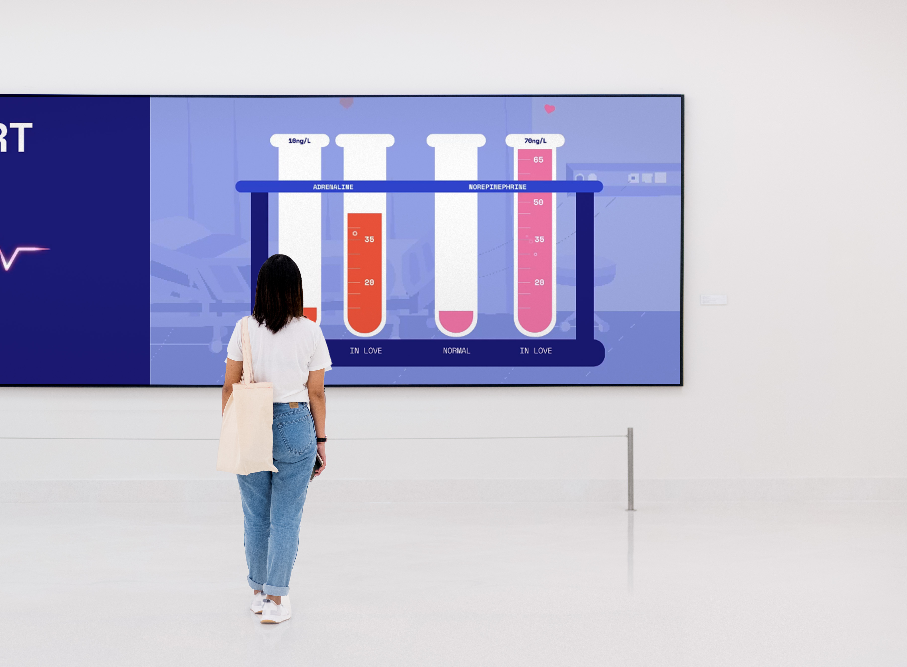

Projects

BIRD Education Platform
A mobile companion app helping students navigate Germany's complex education and funding landscape, featuring a digital wallet, smart notebook, and AI chatbot.
Show me →
Mobile-First Car UX
A thesis project for Audi AG exploring how personal smart devices can become the core of the Level 5 autonomous driving experience.
Show me →
Chain²Bike
A blockchain-powered dApp making e-bike ownership transparent, with a tamper-proof digital logbook and secure peer-to-peer ownership transfers.
Show me →
AKKAdemy E-Learning
Redesigning Akkodis's internal learning platform after a company merger, aligning brand identity, improving usability, and rebuilding the component library.
Show me →
LOVEsick
An interactive museum exhibit at Visualiseringscenter C in Sweden, inviting young visitors to explore the biology and feeling of falling in love.
Show me →
HMI for Driving Simulation
A modular, brand-aligned EV cockpit interface built for Akkodis's internal driving simulation software, ready for animation and system integration.
Show me →
The Horror Mode
A Halloween motion piece for Akkodis that turns corporate social media into something genuinely creepy through illustration and animation.
Show me →
Little Food Fighters
A printed card game about food waste designed for families, packaged directly in the grocery bag and extended with an AR companion app.
Show me →